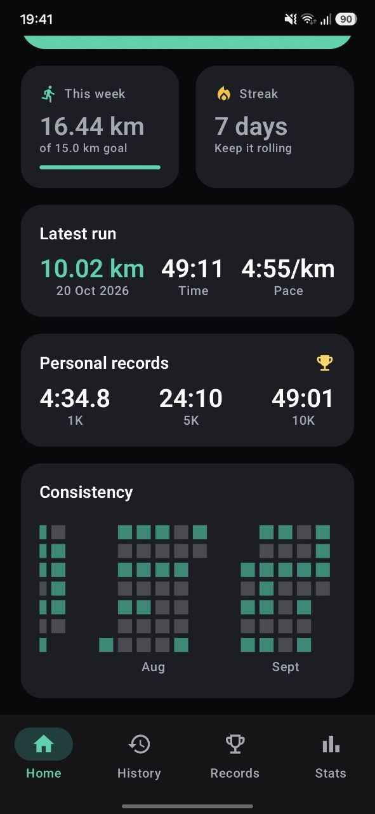
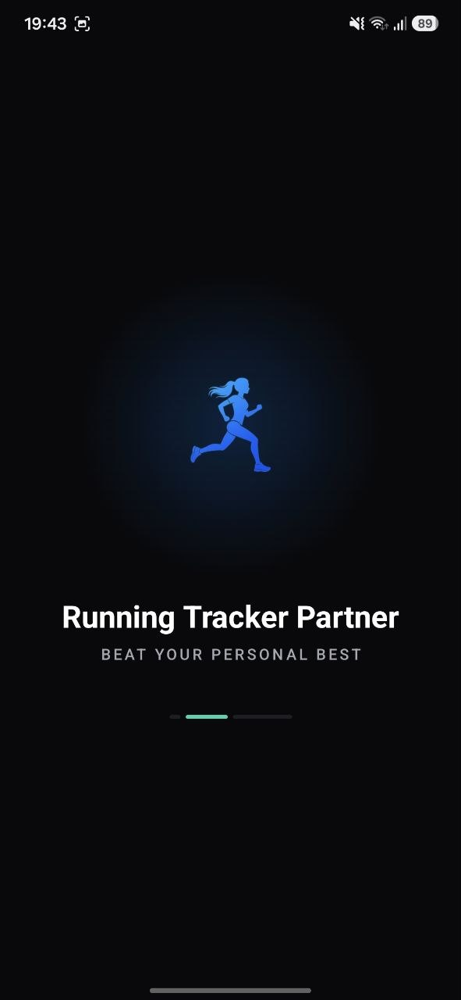

Live PR chase
See "7s ahead of your 5K PR" as you run, plus the pace the rest of the distance needs to take the record.
Running Tracker Partner knows your records and coaches you live: how far ahead or behind PR pace you are, and the exact pace you need to hold to take the record.
Other trackers tell you what you did. This one tells you what to do next — while it still matters.
See "7s ahead of your 5K PR" as you run, plus the pace the rest of the distance needs to take the record.
Pace, distance, time and required PR pace spoken every 250 m, km, mile or minute — your music ducks, it never stops.
Your fastest 100 m, 1K, mile, 5K, 10K, half and full marathon — found anywhere inside any run, plus your own custom distances.
Bad fixes and teleport spikes are filtered out before they touch your pace. A live quality badge tells you when the signal is weak.
A six-month heatmap of running days, a streak counter and a weekly distance goal keep you showing up.
Per-km and per-mile splits with your fastest highlighted, route line, elevation, calories, and week-to-all-time totals.
Auto-pause at traffic lights, a screen lock against pocket taps, and hold-to-finish so a run never ends by accident.
Sign in with Google and every finished run is backed up automatically — free. Switch phones and your history comes with you.
One big button on Home. A short countdown, then GPS takes over — no setup, no account.
The coach compares you against your record for the next distance and tells you whether you're ahead or behind.
The chase ring and the voice tell you the exact pace that takes the record. Push, or save it for next time.
Hold to finish. New records get confetti, a spoken announcement and a place on your Records board.
You race your own past self, not a stranger's leaderboard.
Everything that matters is spoken, so you can keep the phone in your pocket.
Runs live on your phone. Export them to a file any time, delete any run in a tap.
Switch units whenever you like — splits are stored both ways, so they stay exact.
An AMOLED-dark design with six accent colours, plus a battery-saver GPS mode.
Tracking, records, voice coach, backup and export are free. Pro just removes ads.


Yes. GPS tracking, personal records, the voice coach, cloud backup and export are all free. Free users see one small banner at the bottom of the screen — never on the live run screen.
Pro removes ads everywhere and unlocks the full best-effort table on every run without watching an ad. It's $0.99/month, $2.99/year or $4.99 once. Nothing free is ever taken away.
No. You can run, track and set records without signing in. Google sign-in is only needed to back runs up to the cloud or to buy Pro, so it can be restored on another phone.
The app knows your record for each distance. While you run it works out whether you're ahead or behind record pace for the next distance, and the pace the rest of that distance needs to beat it — shown on screen and spoken by the coach.
No. The coach briefly lowers your music while it speaks, then lets it play on.
It depends on your phone's GPS and surroundings. The app filters out bad fixes and shows a live GPS quality indicator, but all measurements are estimates — tall buildings and tree cover can affect them.
Yes — sign in with the same Google account on the new phone and your runs are restored automatically. You can also export every run to a JSON file and import it.